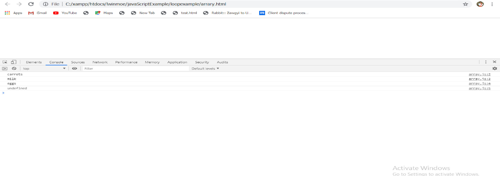
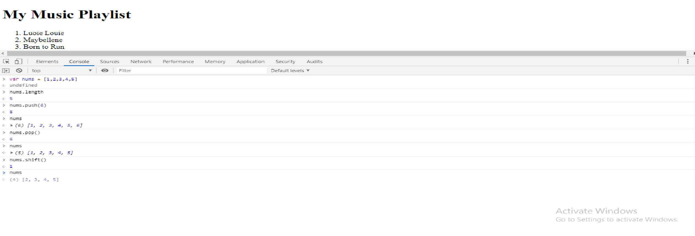
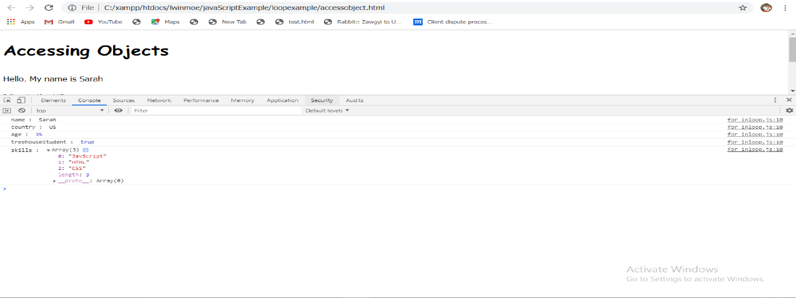

အခု section မှာတော့ JavaScript Loops, Arrays and Objects တို့ကို လေ့လာသွားမှာဖြစ်ပါတယ်။ သူတို့ဟာဆိုရင် ကျွန်တော်တို့ နေ့စဉ်ရေးနေတဲ့ JavaScript programming ရဲ့ three fundamental concepts တွေဖြစ်ပါတယ်။ Loops ဆိုတာကတော့ same set of actions တွေကို over and over again repeat လုပ်တဲ့ way တစ်ခုကို provide လုပ်ပေးတာဖြစ်ပါတယ်။ Arrays ဆိုတာကတော့ lots of information တွေကို store လုပ်တဲ့ convenient way တစ်ခုကို provide လုပ်ပေးတာဖြစ်ပါတယ်။ Objects ဆိုတာကတော့ information တွေကို store လုပ်တဲ့ another way တစ်ခုပဲဖြစ်ပါတယ်။
Programming မှာဆိုရင် loop တစ်ခုဟာ times တစ်ခုရဲ့ certain number တွေကို same action ကို repeat လုပ်တဲ့ way တစ်ခုပဲဖြစ်ပါတယ်။ ဥပမာ ten random numbers ကို web page တစ်ခုကို display လုပ်ချင်တယ်ဆိုပါတော့ ကျွန်တော်တို့ဟာ one random number ကို generate လုပ်တဲ့ code ကို write လုပ်ပြီးတော့ page မှာ အဲ့ဒါကို print လုပ်ပေးရမှာဖြစ်ပါတယ်။ အဲ့လိုပဲ same code တွေကို နောက်ထပ် ကျွန်တော်တို့ လိုချင်သလောက် write နေရမယ်ဆိုရင်အဆင်မပြေနိုင်ပါဘူး။ အဲ့လိုတွေရေးနေစရာမလိုတဲ့ အကောင်းဆုံး way တစ်ခုကတော့ code ကို တစ်ကြိမ်ပဲရေးပြီးတော့ သူ့ကို ကျွန်တော်တို့ repeat လုပ်ချင်သလောက်လုပ်မှာပဲဖြစ်ပါတယ်။ အဲ့ဒါဟာလုပ်ဆောင်တာဟာ loop ပဲဖြစ်ပါတယ်။ အခု first အနေနဲ့ while loop ကိုသွားကြည့်ရအောင်။ First, while loop ဟာဆိုရင် simple ဖြစ်ပါတယ်။ သူ့မှာဆိုရင် while keyword နဲ့ ပြီးတော့ set of parentheses ပါရမှာဖြစ်ပါတယ်။ Condition တစ်ခုကို set of parentheses ထဲမှာပဲ ရေးရမှာဖြစ်ပါတယ်။ သူဟာဆိုရင် condition ဟာ true ဖြစ်တဲ့အလျောက် over and over runs လုပ်နေမှာဖြစ်ပါတယ်။ Example မှာ ten random numbers ကို print လုပ်ဖို့ရန်အတွက် while loop တစ်ခုကို အသုံးပြုထားတာဖြစ်ပါတယ်။ While loop ဟာဆိုရင် conditional statement တစ်ခုနဲ့ တူပါတယ်။ သူ့မှာဆိုရင် final brace ရဲ့ နောက်မှာ semicolon ထည့်ပေးစရာမလိုပါဘူး။ အဲ့မှာဆိုရင် curly braces ထဲမှာ random numbers ၁၀ ခုကို page မှာ print ထုပ်ပြထားတာဖြစ်ပါတယ်။ အဲ့မှာဆိုရင် JavaScript interpreter ဟာဘယ်လိုအလုပ်လုပ်လဲဆိုတော့ first အနေနဲ့ JavaScript interpreter က program ကို reads လုပ်တယ်။ သူဟာ functions တွေကို memorizes လုပ်ပြီးတော့ any syntax errors တွေကို checks လုပ်ပေးပါတယ်။ သူစပြီးတော့ run လုပ်တာကတော့ counter ဆိုတဲ့ variable တစ်ခုကို run လုပ်တယ်။ ပြီးတော့ သူဟာ while loop ကို ဆင်းပြီးတော့ condition ကို test လုပ်တယ်။ အဲ့နေရာမှာဆိုရင် variable ဟာ value 0 ကို hold လုပ်ထားဖြစ်ပါတယ်။ loop condition ဟာ counter ဟာ 10 ထက် ငယ်လားဆိုပြီးတော့မေးလိုက်တယ်။ အဲ့မှာ 0 ဟာ 10 ထက် ငယ်တဲ့အတွက်ကြောင့် JavaScript interpreter ဟာ code block ထဲသွားပြီးတော့ အလုပ်လုပ်ပါတယ်။ Example မှာဆိုရင် first အနေနဲ့ random number တစ်ခုကို generate လုပ်ပေးလိုက်မယ်။ ပြီးတော့ အဲ့ random number ကို page မှာ write လုပ်တယ်။ ပြီးတော့ counter variable ကို 1 ကို add လုပ်လိုက်တယ်။ အဲ့မှာဆိုရင် counter variable ထဲမှာ 1 ဆိုတဲ့ value ကို holds လုပ်သွားပြီဖြစ်ပါတယ်။ အဲ့ဒါပြီးတော့ loop ဟာဆိုရင် while condition ပြန်သွားပြီးတော့ ပြန် check လုပ်ပါတယ်။ အဲ့မှာဆိုရင် ကျွန်တော်တို့ရဲ့ counter variable ရဲ့ value ဟာ 10 ထက်ငယ်နေသရွေ့ block code ကို အလုပ်လုပ်ပေးမှာဖြစ်ပါတယ်။
function randomNumber(upper) {
return Math.floor( Math.random() * upper + 1)
}
var counter = 0;
while (counter < 10) {
var randNum = randomNumber(6);
document.write(randNum + ' ');
counter += 1;
}
Test Yourselfပြီးခဲ့တဲ့ section မှာ while loop အကြောင်းကို လေ့လာခဲ့ပြီးဖြစ်ပါတယ်။ သူဟာဆိုရင် block of JavaScript code တွေကို repeat ဖြစ်စေတာပဲဖြစ်ပါတယ်။ အခုတစ်ခါ example မှာတော့ computer တစ်ခုဟာ random number 1 to 10000 အထိဖြစ်ပါတယ်။ နောက် computer ဟာအဲ့ number တွေကို randomly guess လုပ်ဖို့ရန်အတွက် ဘယ်လောက် times ယူတယ်ဆိုတာပဲဖြစ်ပါတယ်။ အဲ့ program ကို break လုပ်လိုက်မယ်ဆိုရင် steps ၃ ခုရှိပါတယ်။ First, ကျွန်တော်တို့ဟာ random number 1 to 10000 တစ်ခုကို generate လုပ်ပေးဖို့လိုပါတယ်။ အဲ့ number ဟာ computer ကနေ guess လုပ်ဖို့အတွက် number ဖြစ်ပါတယ်။ Second, while loop တစ်ခုလိုမယ် အဲ့ထဲမှာ computer ဟာ random number တစ်ခုကို guess လုပ်ရမှာဖြစ်ပါတယ်။ တစ်ကယ်လို computer ကနေ guess လုပ်လိုက်တဲ့ number ဟာ program ရဲ့ အစပိုင်းမှာရှိတဲ့ generate လုပ်ထားတဲ့ number နဲ့ match ဖြစ်ခဲ့ရင် loop ဟာ end ဖြစ်သွားမှာဖြစ်ပါတယ်။ Match မဖြစ်ဘူးဆိုရင် loop ဟာ computer ကနေ correct number ကို guess လုပ်နေတဲ့အထိ ဆက်လုပ်နေမှာဖြစ်ပါတယ်။ နောက်ဆုံး step ကတော့ loop ကနေထွက်ပြီးတော့ the random number ကို print လုပ်မယ်ပြီးတော့ အဲ့ number ကို computer ကနေ guess လုပ်တဲ့ number of times ကို print လုပ်ပေးမှာဖြစ်ပါတယ်။ နောက် ကျွန်တော်တို့အရင် section မှာအသုံးပြုခဲ့တဲ့ function ကို original random number ကို generate လုပ်ဖို့ရန်အတွက် ထပ်ပြီးတော့ အသုံးပြုမှာဖြစ်ပါတယ်။ First အနေနဲ့ random number ရဲ့ upper limit ကို define လုပ်ဖို့ရန်အတွက် variable တစ်ခုကို create လုပ်ရမှာဖြစ်ပါတယ်။ နောက် computer ကနေ guess လုပ်ဖို့ရန်အတွက် number ကို generate လုပ်ပေးရမှာဖြစ်ပါတယ်။ အဲ့ generate number တွေဟာ 1 to 10000 အထိပဲဖြစ်ပါတယ်။ ကျွန်တော်တို့ create လုပ်ခဲ့တဲ့ variables တွေအားလုံးကို program ရဲ့ top မှာထားတာပိုကောင်းပါတယ်။ ဒါဟာ create လုပ်ခဲ့တဲ့ variables တွေကို လွယ်လွယ်ကူကူ မြင်နိုင်တယ်။ ပြီးတော့ program အတွက် set up options or preferences တွေကိုလုပ်ဖို့ရန်အတွက်အသုံးပြုတဲ့ variables တွေကိုလည်း လွယ်လွယ်ကူကူ change လုပ်နိုင်ပါတယ်။ နောက် ကျွန်တော်တို့ဟာ computer ကနေ guess လုပ်ရမဲ့ number ကို change လုပ်ချင်တဲ့အခါမှာလည်းလွယ်ကူပါတယ်။ နောက်ထပ် variables နှစ်ခုကတော့ တစ်ခုက computer ရဲ့ guess ကို hold လုပ်ဖို့နဲ့ နောက်တစ်ခုကတော့ number of attempts ကို hold လုပ်ဖို့ရန်အတွက်ပဲဖြစ်ပါတယ်။ နောက် while loop မှာဆိုရင် exclamation mark ကို logical not operator လို့ခေါ်ပါတယ်။ နောက်အဲ့ဒါကို equal sign နှစ်ခုနဲ့ combine လုပ်တဲ့အခါမှာ အဲ့ဒါဟာ not equal လို့ခေါ်ပါတယ်။
var upper = 10000;
var randomNumber = getRandomNumber(upper);
var guess;
var attempts = 0;
function getRandomNumber(upper) {
return Math.floor( Math.random() * upper + 1)
}
while (guess !== randomNumber) {
guess = getRandomNumber( upper);
attempts += 1;
}
document.write("<p> The random number was:" + randomNumber + "</p>");
document.write("<p> It took the computer " + attempts + "attempts to get it right.</p>");
Test YourselfWhile loop နဲ့ related ဖြစ်နေတဲ့ အခြား loop ရဲ့ type တစ်ခုရှိပါသေးတယ်။ အဲ့ဒါကတော့ do while loop ပဲဖြစ်ပါတယ်။ သူ့ရဲ့ basic structure ကတော့ do{} while () ပဲဖြစ်ပါတယ်။ သူဟာလည်း condition တစ်ခု true ဖြစ်နေခဲ့တယ်ဆိုရင် over and over again အလုပ်လုပ်နေမှာဖြစ်ပါတယ်။ အဲ့လိုဆိုရင် ကျွန်တော်တို့ဟာ while loop နဲ့အတူတူပဲလု့ိထင်နိုင်ပါတယ်။ ဒါပေမဲ့ အဲ့မှာဆိုရင် one basic difference ရှိပါတယ်။ အဲ့ဒါကတော့ do while loop ဟာဆိုရင် code block ကို အနည်းဆုံးတစ်ကြိမ်ပဲ execute လုပ်ပေးတာဖြစ်ပါတယ်။ ဘာကြောင့်လဲဆိုတော့ code block ပြီးတဲ့အထိ သူဟာ condition ကို test မလုပ်တဲ့အတွက်ကြောင့်ပဲဖြစ်ပါတယ်။ သူတို့နှစ်ကို ယှဉ်ကြည့်မယ်ဆိုရင် while loop တစ်ခုဟာ loop ရဲ့ အစမှာပဲ condition ကို check လုပ်တာဖြစ်ပါတယ်။ တစ်ကယ်လို့ condition ဟာ true ဖြစ်တယ်ဆိုရင် loop ဟာ run မှာဖြစ်ပါတယ်။ Condition ဟာ false ဖြစ်ခဲ့တယ်ဆိုရင်တော့ loop ဟာ run မလုပ်ပါဘူး။ နောက် do while loop ဟာဆိုရင် code block ကို တစ်ကြိမ် run လုပ်ပြီးတဲ့အထိ သူဟာ condition ကို check မလုပ်ပါဘူး။ Code block ကို run လုပ်ပြီးမှာ condition ကို သွားပြီးတော့ condition မှာ true ဖြစ်ခဲ့တယ်ဆိုရင် code block ကို နောက် တစ်ခါမှာပြန် run မှာဖြစ်ပါတယ်။ Do while loop ကို ဘာလို့အသုံးပြုသင့်တာလဲဆိုတော့ သူရဲ့ one good တစ်ခုကတော့ ကျွန်တော်တို့ဟာ user တစ်ယောက်ကို some information တွေကို prompt လုပ်ပြီးတော့ user ကနေ အဲ့ information တွေကို သေချာအောင်လုပ်ပြီးတော့ ကျွန်တော်တို့ဆီကို ပြန်ပို့တဲ့အခါတွေမှာအသုံးပြုနိုင်ပါတယ်။ ဥပမာ prompt dialog ကနေပြီးတော့ user ဆီကနေ email address ကို ask လုပ်လိုက်မယ်။ အဲ့မှာဆိုရင် user ကနေ valid ဖြစ်တဲ့ email ကို type အလုပ်မချင်း prompt dialog ဟာ email address ကို ask လုပ်နေမှာဖြစ်ပါတယ်။ အဲ့လိုတွေ create လုပ်ချင်တဲ့အခါမှာ do while loop ကိုအသုံးပြုနိုင်ပါတယ်။ Example မှာဆိုရင် basic number guessing game တစ်ခုကို do while loop ကို အသုံးပြုပြီးတော့ create လုပ်ထားတာပဲဖြစ်ပါတယ်။ အဲ့မှာဆိုရင် alert box ကနေပြီးတော့ number ကို user ကို correct number ကို guess လုပ်ခိုင်းမှာဖြစ်ပါတယ်။ Correct number ကို မရောက်မချင်း alert box လေးဟာ ပေါ်နေမှာဖြစ်ပါတယ်။ Correct number ဖြစ်သွားတဲ့အခါမှာတော့ အဲ့ correct number ကိုရောက်ဖို့ရန်အတွက် user က ဘယ်နှစ်ကြိမ် type လုပ်ရတယ်ဆိုတဲ့ အကြိမ်အရေအတွက်ကို print လုပ်ပေးမှာဖြစ်ပါတယ်။
var randomNumber = getRandomNumber(10);
var guess;
var guessCount = 0;
var correctGuess = false;
function getRandomNumber(upper) {
return Math.floor( Math.random() * upper + 1)
}
do {
guess = prompt ('I am thinking of a number 1 t0 10. What is it?');
guessCount += 1;
if( parseInt(guess) === randomNumber){
correctGuess = true;
}
} while( ! correctGuess)
document.write('<h1> You guessed the number </h1>');
document.write('It took you '+ guessCount + 'tries to get the number '+ randomNumber);
Test Yourselfဒီ section မှာတော့ loop ရဲ့ third type ဖြစ်တဲ့ for loop အကြောင်းကိုလေ့လာသွားမှာဖြစ်ပါတယ်။ သူဟာဆိုရင် while and do while loops တို့ထက် ပိုပြီးတော့ complicated ဖြစ်ပါတယ်။ ဒါပေမဲ့ basically အရတော့ same things တွေကို လုပ်ဆောင်ပါတယ်။ အနည်းငယ်လေးပဲကွားသွားတာဖြစ်ပါတယ်။ For loop ကို particular number of times တစ်ခုမှာ run လုပ်ဖို့ရန်လိုအပ်တဲ့ actions တွေအတွက်အသုံးပြုနိုင်ပါတယ်။ For loops ဟာဆိုရင် list of data ဖြစ်တဲ့ arrays တွေနဲ့ အလုပ်လုပ်တဲ့ common way တစ်ခုလည်းဖြစ်ပါတယ်။ အဲ့ဒါကိုတော့ next lesson မှာ လေ့လာလသွားမှာဖြစ်ပါတယ်။ while loop နဲ့ for loop ကို compare လုပ်ကြည့်ရအောင်။ ကျွန်တော်တို့ compare လုပ်တဲ့ code တွေကို အောက်မှာပြပေးထားပါတယ်။ အဲ့မှာဆိုရင် first, basic while loop ကို ကြည့်ရအောင်။ သူဟာဆိုရင် 0 to 10 numbers ကို page မှာ write လုပ်တာဖြစ်ပါတယ်။ အဲ့ code မှာဆိုရင် counter ဆိုတဲ့ variable ထဲမှာ 0 ကို assign လုပ်ခဲ့တာဖြစ်ပါတယ်။ နောက် JavaScript interpreter ဟာဆိုရင် counter variable ထဲမှာရှိတဲ့ value နဲ့ 10 ကို compare လုပ်ပါတယ်။ အဲ့မှာ counter ထဲမှာရှိတဲ့ value ဟာ 10 ထက်ငယ်ခဲ့တယ်ဆိုရင် loop ကို run မှာဖြစ်ပါတယ်။ နောက် counter ထဲမှာ value ဟာ 0 ဖြစ်ပါတယ်။ အဲ့ဒါကြောင့်သူဟာ 10 ထက်ငယ်တဲ့အတွက်ကြောင့် counter variable ထဲရှိတဲ့ value ကို page မှာ write လုပ်ပေးမှာဖြစ်ပါတယ်။ ပြီးတော့ counter variable ထဲမှာရှိတဲ့ value ကို 1 ပေါင်းထည့်လိုက်တာဖြစ်ပါတယ်။ Loop ကို 10 ကြိမ် သွားပြီးတဲ့နောက်မှာ counter variable ထဲမှာ 10 ကို set လုပ်သွားပြီဖြစ်ပါတယ်။ အဲ့မှာဆိုရင် condition ဟာ false ဖြစ်သွာပြီးဖြစ်တဲ့အတွက်ကြောင့် loop ဟာ done ဖြစ်သွားပြီဖြစ်ပါတယ်။ အခု for loop ကို compare လုပ်ကြည့်ရအောင်။ For loop ဟာဆိုရင် more compact ဖြစ်ပါတယ်။ While loop နဲ့ create လုပ်ထားတဲ့ program မှာဆိုရင် code ဟာ five lines ရှိပါတယ်။ For loop program မှာတော့ three lines ပဲရှိပါတယ်။ For loop မှာ ကျွန်တော်တို့ဟာ for keyword နဲ့ စပြီးတော့ parentheses နဲ့ followed လုပ်ပေးရမှာဖြစ်ပါတယ်။ A lot of stuff ကို parentheses ထဲမှာ လုပ်ဆောင်ရမှာဖြစ်ပါတယ်။ First, counter ရဲ့ initial declaration ဖြစ်ပါတယ်။ နောက် condition ဖြစ်တဲ့ counter < 10 ဟာဆိုရင် while loop မှာရှိတဲ့ condition နဲ့ အတူတူပဲဖြစ်ပါတယ်။ Last component ကတော့ counter ကို loop ဖြတ်သွားတဲ့အချိန်တိုင်းမှာ သူ့ရဲ့ value ကို 1 တိုးပေးသွားတာဖြစ်ပါတယ်။ For loop ဟာဆိုရင် common ဖြစ်ပါတယ်။ နောက်သူ့ကို write လုပ်ဖို့ရန်လည်းလွယ်ကူပါတယ်။ Programmers အများစုဟာ counter လို variable ကို represent လုပ်ဖို့ရန်အတွက် single letter တစ်ခုကို အသုံးပြုကြပါတယ်။
var html = '';
for (var i = 1; i <= 10; i += 1) {
html += '<div>' + i + '</div>';
}
document.write(html);
Test Yourselfကျွန်တော်တို့အခုဆိုရင် loop types ၃ မျိုးကို လေ့လာခဲ့ပြီးဖြစ်ပါတယ်။ အဲ့ဒါတွေကတော့ while, do while and for loops တို့ပဲဖြစ်ပါတယ်။ သူတို့တစ်ခုချင်းစီမှာ exit condition အချိုရှိပါတယ်။ JavaScript မှာဆိုရင် break statement တစ်ခုပါရှိပါတယ်။ အဲ့ဒါဟာ loop တစ်ခုထဲမှာ encountered ဖြစ်နေတဲ့အချိန်မှာ အဲ့ loop ကနေ immediately exits လုပ်ပေးမှာဖြစ်ပါတယ်။ Example အနေနဲ့ do while loop ကို အသုံးပြုထားတဲ့ example ကို အသုံးပြုထားတာဖြစ်ပါတယ်။ အဲ့မှာဆိုရင် do while loops ဟာဆိုရင် သူဟာ အနည်းဆုံးတစ်ကြိမ် run လုပ်တာဖြစ်ပါတယ်။ ဘာလို့လဲဆိုတော့ သူ့ရဲ့ test condition ဟာ loops code block ပြီးတဲ့အခါမှာ happens စြဖ်တဲ့အတွကကြောင့်ပဲဖြစ်ပါတယ်။ ကျွန်တော်တို့ဟာ ဒီ example မှာဆိုရင် prompt တစ်ခုကို အနည်းဆုံးတစ်ကြိမ်ပဲ appeared ဖြစ်အောင် do while loop တစ်ခုကို အသုံးပြုမှာဖြစ်ပါတယ်။ အဲ့မှာဆိုရင် test condition ဟာ correct guess variable ဟာ true မဖြစ်တာကိုသေချာအောင် check လုပ်တာဖြစ်ပါတယ်။ အဲ့မှာဆိုရင် exclamation point ကို not operator လို့ခေါ်ပါတယ်။ နောက် အဲ့ loop ဟာ correct guess value ဟာ true ဖြစ်တဲ့အထိ repeat လုပ်နေမှာဖြစ်ပါတယ်။ အခု ကျွန်တော်တို့ဟာ အဲ့ဒါကို simple while loop ကို ပြောင်းပြီးတော့ condition ကိုလည်း true ကို ပြောင်းလိုက်မှာဖြစ်ပါတယ်။ အဲ့လို create လုပ်တာကို infinite loop လို့ခေါ်ပါတယ်။ ဒါဟာဆိုရင် really bad idea တစ်ခုဖြစ်ပါတယ်။ True ဟာဆိုရင် အမြဲ true ဖြစ်တဲ့အတွက်ကြောင့် အဲ့ condition ဟာဆိုရင် ဘယ်တော့မှာ not true ဖြစ်မလာပါဘူး။ ပြီးတော့ သူ့ထဲမှာရှိတဲ့ code တွေဟာလည်း ထပ်ခါထပ်ခါ run နေမှာဖြစ်ပါတယ်။ အခု အဲ့ loop ကနေ break out လုပ်ဖို့ရန်အတွက် break statement တစ်ခုကို အသုံးပြုမှာဖြစ်ပါတယ်။ အဲ့ဒါကို ကျွန်တော်တို့ဟာ condition statement ထဲမှာ add လုပ်ပေးဖို့လိုပါတယ်။ အခုကျွန်တော် create လုပ်လိုက်တဲ့ program ဟာဆိုရင် user ကို correct guess ဟာ user input လုပ်လိုက်တဲ့ number တစ်ခုဟာ script ရဲ့ အစမှာ create လုပ်ခဲ့တဲ့ random number နဲ့ match မဖြစ်မချင်း ask လုပ်နေမှာဖြစ်ပါတယ်။ ကျွန်တော်တို့ဟာ break statement တစ်ခုကို infinite loop တစ်ခုထဲမှာ အခုလို အသုံးပြုလို့မရပါဘူး။ တစ်ကယ်တော့ most of the time မှာ break ကို regular loop တစ်ခုတစ်လျောက်မှာဘဲအသုံးပြုတာဖြစ်ပါတယ်။ အဲ့ဒါကြောင့် ကျွန်တော်တို့ရဲ့ example ကို change လုပ်လိုက်မယ်။ ဘယ်လိုလဲဆိုတော့ loop ကို ten guesses ပဲ allow လုပ်မယ်။ အခုဆိုရင် loop ဟာ ten times ပဲ အလုပ်လုပ်မှာဖြစ်ပါတယ်။ တစ်ကယ်လို့ user တွေဟာ correct number ကို guess လုပ်တယ်ဆိုရင် loop ဟာ break statement ကြောင့် end သွားမှာဖြစ်ပါတယ်။ နောက်ကျွန်တော်တို့ conditional statement တစ်ခုကို user guess လုပ်လိုက်တဲ့ number ကို test လုပ်ဖို့ရန်အတွက် အသုံးပြုမှာဖြစ်ပါတယ်။ မှန်ခဲ့တယ်ဆိုရင်တော့ message ကို print out လုပ်ပေးမှာဖြစ်ပါတယ်။ မမှန်ခဲ့ဘူးဆိုရင် "Sorry. You did not guess the number" ဆိုတဲ့ message တစ်ခုကို print out လုပ်ပေးမှာဖြစ်ပါတယ်။ Example မှာလေ့လာနိုင်ပါတယ်။
var randomNumber = getRandomNumber(10);
var guess;
var guessCount = 0;
var correctGuess = false;
function getRandomNumber(upper) {
return Math.floor( Math.random() * upper + 1)
}
while( guessCount < 10) {
guess = prompt ('I am thinking of a number 1 t0 10. What is it?');
guessCount += 1;
if( parseInt(guess) === randomNumber){
correctGuess = true;
break;
}
}
if(correctGuess){
document.write('<h1> You guessed the number </h1>');
document.write('It took you '+ guessCount + 'tries to get the number '+ randomNumber);
} else {
document.write('<h1> Sorry. You did not guess the number.</h1>');
}
Test Yourselfအခုဆိုရင် ကျွန်တော်တို့ဟာ JavaScript programs တွေကို write လုပ်လိုရနေပါပြီး။ ကျွန်တော်တို့ create လုပ်ထားတဲ့ code ကို ကြည့်ပြီးတော့ ကျွန်တော်တို့ code ကို write လုပ်တဲ့နေရာမှာ improve ဖြစ်စေတဲ့ ways ကို သတိထားမိလာမှာဖြစ်ပါတယ်။ Programmers တွေဟာ program တစ်ခုကို write လုပ်တဲ့မခါမှာ perfect ဖြစ်အောင် အလုပ်လုပ်နိုင်ပါတယ်။ Improving code ဆိုတာ code ကို မြန်မြန်ဆန်ဆန် run လုပ်ရမယ်ဆိုလိုတာမဟုတ်ပါဘူး။ Code ကို read လုပ်တဲ့အခါမှာ လွယ်လွယ်ကူကူ read လုပ်နိုင်ရမယ် ပြီးတော့ comments တွေနဲ့ ကျွန်တော်တို့ရဲ့ program ဘယ်လိုအလုပ်လုပ်တယ်ဆိုတာကို other people နားလည်နိုင်ရမှာဖြစ်ပါတယ်။ DRY programming techniques ဟာဆိုရင် most common improvements တွေထဲကတစ်ခုပဲဖြစ်ပါတယ်။ DRY programming ဟာဆိုရင် existing program တစ်ခုကို improve ဖြစ်စေပါတယ်။ DRY ဆိုတာ acronym တစ်ခုဖြစ်ပါတယ်။ သူ့ရဲ့ stands ကတော့ don't repeat yourself ပဲဖြစ်ပါတယ်။ အဲ့ဒါဟာ programmer တစ်ယောက် learn လုပ်နိုင်တဲ့ most important concepts တွေထဲက တစ်ခုဖြစ်ပါတယ်။ DRY programming ဆိုတာ program ထဲမှာ same ဖြစ်နေတဲ့ code တွေကို reducing လုပ်တာဖြစ်ပါတယ်။ ပြီးခဲ့တဲ့ sections တွေမှာလေ့လာခဲ့တဲ့ loops ဟာဆိုရင် DRY ရဲ့ way တစ်ခုဖြစ်ပါတယ်။ JavaScript functions တွေဟာဆိုရင် DRY programming ကို embrace လုပ်တဲ့ another way တစ်ခုဖြစ်ပါတယ်။ ကျွန်တော်တို့ဟာ function ကို hundreds of times call လုပ်နိုင်ပါတယ်။ ဒါပေမဲ့ code တွေကိုတော့ function ထဲမှာ တစ်ကြိမ်ပဲ write လုပ်နိုင်ပါတယ်။ အဲ့ဒါဟာ DRY programming ပဲဖြစ်ပါတယ်။ အခု challenge ကတော့ကျွန်တော်တို့လေ့လာနေတာကတော့ existing script တစ်ခုအပေါ်မှာအခြေခံပြီးတော့ improve လုပ်သွားမှာဖြစ်ပါတယ်။ Programmers တွေဟာ improving လုပ်တဲ့ process ကို program refactoring လု့ိခေါ်ကြပါတယ်။ Example မှာဆိုရင် code ဟာ 67 lines ရှိပါတယ်။ အဲ့မှာဆိုရင် same code ကို 9 times repeat လုပ်ထားတာဖြစ်ပါတယ်။ အဲ့ဒါကိုကျွန်တော်တို့ဟာ DRY programming ကို အသုံးပြုပြီးတော့ refactoring လုပ်သွားမှာဖြစ်ပါတယ်။ အဲ့ဒါကို next section မှာလေ့လာနိုင်ပါတယ်။
အခု example မှာဆိုရင် refactoring လုပ်ဖို့ရန်အတွက် loop တစ်ခုကို အသုံးပြုမှာဖြစ်ပါတယ်။ အဲ့မှာ same code ကို 9 times repeat လုပ်ထားတာဖြစ်တဲ့ အတွက်ြကောင့် သူ့ကို loop ထဲမှာထည့်လိုက်မှာဖြစ်ပါတယ်။
var html = '';
var red;
var green;
var blue;
var rgbColor;
for (var i = 1; i <= 10; i += 1)
{
red = Math.floor(Math.random() * 256 );
green = Math.floor(Math.random() * 256 );
blue = Math.floor(Math.random() * 256 );
rgbColor = 'rgb(' + red +',' + green + ',' + blue + ')';
html += ' ';
}
document.write(html);
Test Yourselfဒီ lesson မှာဆိုရင် programming concept ရဲ့ really important တစ်ခုဖြစ်တဲ့ arrays အကြောင်းကို လေ့လာသွားမှာဖြစ်ပါတယ်။ Array တစ်ခုကို data structure လု့ိခေါ်ပါတယ်။ နောက် သူ့ကို information တွေကို store and organize လုပ်တဲ့ way တစ်ခုလို့လဲခေါ်ပါတယ်။ ကျွန်တော်တို့ဟာ another data structure ဖြစ်တဲ့ simple variable တစ်ခုကို အသုံးပြုခဲ့ပြီးဖြစ်ပါတယ်။ Simple variable တစ်ခုဟာ box တစ်ခုလို acts လုပ်ပါတယ်။ သူဟာ a number or a string or a Boolean value ကို hold လုပ်နိုင်ပါတယ်။ Simple variable ရဲ့ problem ကတော့ သူဟာ one value ကိုပဲ holds လုပ်နိုင်တာဖြစ်ပါတယ်။ Array တစ်ခုဟာဆိုရင် storing information ရဲ့ flexible method တစ်ခုဖြစ်ပါတယ်။ သူဟာ a single string, 50 numbers, or any combination of data types တွေကို hold လုပ်နိုင်ပါတယ်။ Array ထဲကို program runs လုပ်နေချိန်မှာ items တွေကို add or remove လုပ်နိုင်ပါတယ်။ Array တစ်ခုကို creating လုပ်တာဟာ simple ဖြစ်ပါတယ်။ var keyword နဲ့ စပြီးတော့ အဲ့ array အတွက် name တစ်ခုကို ပေးလိုက်ရုံပါပဲ။ နောက် equal sign ကို add လုပ်ပြီးတော့ a pair of brackets and a semicolon နဲ့ followed လုပ်ပေးရမှာဖြစ်ပါတယ်။ အဲ့ equal sing ဟာ value တစ်ခုကို အဲ့ variable ထဲကို assign လုပ်လိုက်တာဖြစ်ပါတယ်။ Semicolon ကတော့ အဲ့ statement ကို end လုပ်လိုက်တာပဲဖြစ်ပါတယ်။ Brackets ကတော့ array တစ်ခုကို represent လုပ်တာဖြစ်ပါတယ်။ အဲ့ထဲမှာ ကျွန်တော်တို့ဟာ list of values တွေကို comma နဲ့ separate လုပ်ပြီးတော့ add လုပ်ရမှာဖြစ်ပါတယ်။ List of values တွေဟ strings တွေလည်းဖြစ်နိုင်သလို numbers or a combination of different types of values တွေလည်းဖြစ်နိုင်ပါတယ်။ Example မှာဆိုရင် array တစ်ခုကို ဘယ်လို create လုပ်ရတယ်ဆိုတာကိုပြောပြပေးထားပါတယ်။ Example မှာပြထားသလို list of values တွေကို line တစ်ခုစီနဲ့ separate လုပ်တာဟာ array ထဲမှာရှိတဲ့ value ကို change ချင်တဲ့အခါမှာ လွယ်လွယ်ကူကူ edit လုပ်နိုင်ပါတယ်။
var shoppingList = [
'carrots',
'milk',
'eggs'
];
အခုဆိုရင် ကျွန်တော်တို့ဟာ array တစ်ခုကို ဘယ်လို create လုပ်ရတယ်ဆိုတာကို သိခဲ့ပြီးဖြစ်ပါတယ်။ ဒါပေမဲ့ array တစ်ခုကို ဘယ်လိုအသုံးပြုရမယ်ဆိုတာကို မသိသေးပါတယ်။ အခု section မှာ array တစ်ခုကို ဘယ်လိုအသုံးပြုရတယ်ဆိုတာကို လေ့လာသွားမှာဖြစ်ပါတယ်။ Simple variable တစ်ခုကိုအသုံးပြုတဲ့နေရာမှာတော့ လွယ်ကူပါတယ်။ သူ့ရဲ့ name ကို ကျွန်တော်တို့ console or alert or write တို့မှာ ထည့်ပေးလိုက်ရုံပါပဲ။ သို့သော်လည်း array တစ်ခုရဲ့ name မှာဆိုရင် value ဟာ တစ်ခုထဲမဟုတ်ပါဘူး။ သူ့ထဲမှာရှိတာက a list of multiple values တွေပဲဖြစ်ပါတယ်။ ကျွန်တော်တို့ဟာ array တစ်ခုထဲမှာရှိတဲ့ single value တစ်ခုကို access လုပ်ဖို့ရန်အတွက် index value တစ်ခုကို အသုံးပြုရမှာဖြစ်ပါတယ်။ သူဟာ number တစ်ခုပဲဖြစ်ပါတယ်။ သူဟာ list ထဲမှာရှိတဲ့ value ရဲ့ position ကို indicate လုပ်ပေးတာဖြစ်ပါတယ်။ Array တစ်ခုထဲမှာရှိတဲ့ first item ရဲ့ index ဟာ 1 မဟုတ်ပါဘူး။ သူ့ရဲ့ index ဟာ 0 ဖြစ်ပါတယ်။ Second item ရဲ့ index ဟာ 1 ဖြစ်ပါတယ်။ Array ထဲက item တစ်ခုခုကို output ထုပ်ချင်တဲ့အခါမှာ array name နဲ့ သူ့နောက်မှာ square brackets ကို followed လုပ်ပေးရမှာဖြစ်ပါတယ်။ အဲ့ square brackets ထဲမှာ ကျွန်တော်တို့ output ထုပ်ချင်တဲ့ item ရဲ့ index ကို ထည့်ပေးရမှာဖြစ်ပါတယ်။ Example မှာ လေ့လာနိုင်ပါတယ်။နောက်အဲ့မှာဆိုရင် ကျွန်တော်တို့ဟာ index number 3 အတွက် array ထဲမှာ value မရှိတဲ့အတွက်ကြောင့် သူ့ကို output ထုပ်တဲ့အခါမှာ undefined ကို ထုပ်ပေးမှာဖြစ်ပါတယ်။
var shopping = ['carrots','milk','eggs'];
console.log(shopping[0]);
console.log(shopping[1]);
console.log(shopping[2]);
console.log(shopping[3]);
Arrays တွေဟာ powerful ဖြစ်ပြီးတော့ သူတို့ကို JavaScript ရဲ့ data structure အတွက်အသုံးပြုကြပါတယ်။ ဘာကြောင့်လဲဆိုတော့ သူနဲ့ အလုပ်လုပ်နိုင်တဲ့ ways တွေကို အများကြီးရှိတဲ့အတွက်ကြောင့်ပဲဖြစ်ပါတယ်။ အခု section မှာကျွန်တော်တို့ဟာ array တစ်ခုထဲကို items တွေကို add လုပ်တဲ့ most common ways 3 ခုကိုလေ့လာသွားမှာဖြစ်ပါတယ်။ Mozilla Developer Network မှာ ever aspect of JavaScript language ရဲ့ detail information တွေကို လေ့လာနိုင်ပါတယ်။ အခု အဲ့ထဲကမှ array object ရဲ့ properties and methods တွေကို လေ့လာသွားမှာဖြစ်ပါတယ်။ First, length property ကို သွားကြည့်ရအောင်။ Length property မှာဆိုရင် array ထဲမှာရှိတဲ့ number of items တွေပါဝင်ပါတယ်။ Length property ဟာ array တစ်ခုအတွက် variable တစ်ခုနဲ့ တူပါတယ်။ Length property ကို အသုံးပြုမယ်ဆိုရင် ရှေ့က array name နဲ့ သူ့နောက်မှ .length ဆိုပြီးတော့အသုံးပြုနိုင်ပါတယ်။ အဲ့လိုအသုံးပြုတာဟာ item တစ်ခုကို array တစ်ခုရဲ့ end မှာ add လုပ်နိုင်တဲ့ way တစ်ခုပဲဖြစ်ပါတယ်။ ဥပမာ ကျွန်တော်တို့ဟာ array ရဲ့ end မှာ item တစ်ခုကို add လုပ်ချင်တယ်ဆိုရင် numbers[numbers.length] = 7; ဆိုပြီးတော့ ရေးပေးရပါတယ်။ အဲ့မှာဆိုရင် array ရဲ့ end ကို 7 ဆိုတဲ့ number ကို add လုပ်လိုက်တာဖြစ်ပါတယ်။ အဲ့ way နဲ့ length property ကိုအသုံးပြုပြီးတော့ array တစ်ခုထဲကို items တွေကို add လုပ်နိုင်ပါတယ်။ နောက် array တစ်ခုရဲ့ end မှာ item တစ်ခုကို add လုပ်တဲ့နေရာမှာ easy way တစ်ခုဖြစ်တဲ့ push method ဖြစ်ပါတယ်။ သူ့ရဲ့ detail ကို Mozilla Developer Network ရဲ့ array documentation မှာလေ့လာနိုင်ပါတယ်။ Method ဟာဆိုရင် object တစ်ခုအပေါ်မှာ perform လုပ်နိုင်တဲ့ action တစ်ခုပဲဖြစ်ပါတယ်။ Push method ကို အသုံးပြုပြီးတော့ one or more items တွေကို array ရဲ့ end မှာ add လုပ်နိုင်ပါတယ်။ သူ့ကိုအသုံးပြုတဲ့နေရာမှာ array's name နဲ့ .push ဆိုပြီးတော့ followed လုပ်ပေးရမှာဖြစ်ပြီးတော့ အဲ့နောက်မှာ parentheses ကို ထည့်ပေးရမှာဖြစ်ပါတယ်။ အဲ့ parentheses ထဲမှာ ကျွန်တော်တို့ add လုပ်ချင်တဲ့ items တွေကို type လုပ်ပေးရမှာဖြစ်ပါတယ်။ တစ်ခုထက်ပိုတဲ့ items တွေကို add လုပ်တဲ့အခါမှာ သူတို့ကို comma နဲ့ separate လုပ်ပြီးတော့ add လုပ်ပေးရမှာဖြစ်ပါတယ်။ JavaScript မှာဆိုရင် array ရဲ့ အစမှာ items တွေကို add လုပ်နိုင်တဲ့ method တစ်ခုလည်းရှိပါသေးတယ်။ အဲ့ဒါကတော့ unshift method ပဲဖြစ်ပါတယ်။ သူ့ကို push method လိုပဲအသုံးပြုနိုင်ပါတယ်။ Example မှာလေ့လာနိုင်ပါတယ်။
var playList = [];
playList.push('I Did It My Way');
playList.push('Respect', 'Imagine');
playList.unshift('Born to Run');
playList.unshift('Luoie Louie', 'Maybellene');
printList (playList);
function printList (list){
var listHTML = '<ol>';
for (var i = 0; i <list.length; i +=1){
listHTML += '<li>' + list[i] + '</li>';
}
listHTML += '</ol>';
print(listHTML);
}
function print(html) {
document.write(html);
}
Test Yourselfပြီးခဲ့တဲ့ section မှာကျွန်တော်တို့ဟာ push and unshift methods တို့ကို လေ့လာခဲ့တာဖြစ်ပါတယ်။ သူတို့ကို အသုံးပြုပြီးတော့ items တွေကို array တစ်ခုရဲ့ end or beginning မှာ add လုပ်နိုင်ပါတယ်။ အခုတစ်မှာတော့ array တစ်ခုရဲ့ end or beginning မှာရှိတဲ့ item ကို remove လုပ်တဲ့ methods နှစ်ခုကို လေ့လာသွားမှာဖြစ်ပါတယ်။ အဲ့နှစ်ခုကတော့ pop and shift methods တို့ပဲဖြစ်ပါတယ်။ Pop ကတော့ push ရဲ့ opposite ကို လုပ်ဆောင်ပေးပါတယ်။ Shift ကတော့ unshift ရဲ့ opposite ကို လုပ်ဆောင်ပေးပါတယ်။ Example မှာလေ့လာနိုင်ပါတယ်။
Arrays တွေဟာ JavaScript မှာ အသုံးများတဲ့ data structures တွေပဲဖြစ်ပါတယ်။ သူတို့ကို list တစ်ခုထဲမှာရှိတဲ့ tasks တွေကို လုပ်ဆောင်ဖို့ရန်အတွက် hold လုပ်ဖို့အသုံးပြုနိုင်ပါတယ်။ ကျွန်တော်တို့မှာ array တစ်ခုရှိတယ်ဆိုရင် သူ့ထဲမှာရှိတဲ့ items တွေနဲ့ အလုပ်လုပ်နိုင်ပါတယ်။ ဥပမာ ကျွန်တော်တို့ရှေ့ကလုပ်ဆောင်ခဲ့တဲ့ example မှာဆိုရင် musical playlist တစ်ခုကို create လုပ်ပြီးတော့ သူ့ထဲမှာရှိတဲ့ song တစ်ခုချင်းစီကို display လုပ်ခဲ့တာဖြစ်ပါတယ်။ Array ထဲမှာရှိတဲ့ item တစ်ခုကိုချင်းစီကို access လုပ်ဖို့ရန်အတွက် first item ကို get လုပ်ဖို့လိုပြီးတော့ သ့ူ့ကို အသုံးပြုပြီးတော့ something ကို လုပ်ဆောင်ရမှာဖြစ်ပါတယ်။ ဥပမာ သူ့ကို web page မှာ print လုပ်တာတွေ or သူ့ကို some other value နဲ့ compare လုပ်တာတွေဖြစ်ပါတယ်။ ပြီးတော့ second item ကို move လုပ်သွားပြီးတော့ အဲ့ steps ကိုပဲ repeat လုပ်ပြီးတော့ third item ကို move လုပ်သွားမယ်။ နောက်တစ်မျိုးပြောရရင် array ထဲမှာရှိတဲ့ item တစ်ခုချင်းစီအတွက် same step ကို repeat လုပ်ပေးဖို့လိုပါတယ်။ အဲ့ဒါကို လုပ်ဆောင်ဖို့ရန်အတွက် ပြီးခဲ့တဲ့ section မှာ loops တွေအကြောင်းကိုလေ့လာခဲ့ပြီးဖြစ်ပါတယ်။ for loop ကို array တစ်ခုထဲမှာ loop ကိုလုပ်ဆောင်ဖို့ရန်အတွက် အသုံးပြုကြပါတယ်။ ဥပမာ ကျွန်တော်တို့ဟာ array ထဲမှာရှိတဲ့ items တွေကို console မှာ print လုပ်ချင်တယ်ဆိုပါတော့ အောက်မှာ code ကို ရေးပြထားပါတယ်။ အဲ့မှာဆိုရင် students လို့ခေါ်တဲ့ array တစ်ခုရှိပါတယ်။ ကျွန်တော်တို့ဟာ name တစ်ခုချင်းစီကို print out လုပ်ဖို့လိုပါတယ်။ အဲ့မှာဆိုရင် four names ရှိတဲ့အတွက်ြကောင့် loop ကို four times runs မှာဖြစ်ပါတယ်။ Loop run မလုပ်ခင်မှာ counter variable ဖြစ်တဲ့ i ထဲမှာ 0 ကို set လုပ်ခဲ့တာဖြစ်ပါတယ်။ အဲ့မှာဆိုရင် loop တစ်ကြိမ်အလုပ်လုပ်တဲ့ အခါတိုင်းမှာ i ထဲကို 1 ကို add လုပ်သွားမှာဖြစ်ပါတယ်။ အဲ့မှာဆိုရင် i ဟာ 4 ထက်မငယ်တော့ဘူးဆိုရင် loop ဟာ end ဖြစ်သွားမှာဖြစ်ပါတယ်။ Loop ဟာ four times run လုပ်မှာဖြစ်တဲ့အတွက်ကြောင့် i ဟာ 0,1,2,3,4 ဆိုပြီးတော့ changing ဖြစ်သွားမှာဖြစ်ပါတယ်။ နောက်ဆုံး 4 ကိုရောက်တဲ့အခါမှာ 4 ထက် မငယ်တော့တဲ့အတွက်ကြောင့် loop ဟာ ဆက်ပြီးတော့ run တော့မှာဟုတ်ပါဘူး။ Array တစ်ခုချင်းစီမှာ length property တစ်ခုရှိပါတယ်။ အဲ့ထဲမှာဆိုရင် number တစ်ခုပါပါတယ်။ အဲ့ number တွေဟာ array ထဲမှာရှိတဲ့ number of items တွေပဲဖြစ်ပါတယ်။ အဲ့မှာဆိုရင် console မှာ ထုပ်ပေးမှာဖြစ်တဲ့အတွက်ကြောင့် console.log method ကို add လုပ်ထားတာဖြစ်ပါတယ်။ Array တစ်ခုထဲမှာရှိတဲ့ items တွေဟာ index position တစ်ခုနဲ့ stored လုပ်ထားတာဖြစ်ပါတယ်။ First item ဟာ index 0 ဖြစ်ပြီးတော့ second item ဟာ index 1 စသည်ဖြင့်ရှိကြပါတယ်။ Index value ကို ကျွန်တော်တို့ရဲ့ loop ထဲမှာ built လုပ်ထားတာဖြစ်ပါတယ်။ Program ဘယ်လိုအလုပ်လုပ်လဲဆိုတာကြည့်ရအောင်။ Array တစ်ခုကို four items နဲ့ create လုပ်ခဲ့တယ်။ ပြီးတော့ for loop အဲ့မှာဆိုရင် i variable ကို value 0 ကို store လုပ်ထားတယ်။ နောက် condition ကို test လုပ်တယ်။ i လေးဟာ student.length ထက် less ဖြစ်လား test လုပ်တယ်။ Less ဖြစ်တယ်ဆိုရင် loop ထဲကို ဝင်တယ်။ အဲ့မှာ program ဟာ students array ထဲမှာရှိတဲ့ index position 0 မှာရှိတဲ့ item ကို console မှာ print လုပ်ပေးလိုက်ပါတယ်။ အဲ့မှာ loop end ပြီးတော့ i ကို 1 add လိုက်တယ်။ ပြီးတော့ condition ဟာ test ပြန်လုပ်တယ်။ 1 ဟာ students.length ထက် less ဖြစ်လာဆိုပြီးတော့ test လုပ်တယ်။ ဖြစ်တယ်ဆိုရင် loop ထဲကို ဝင်ပြီးတော့ array ထဲက index position 1 နေရာမှာရှိတဲ့ item ကို console မှာ print လုပ်ပေးတယ်။ အဲ့လိုပဲ loop end သွားတဲ့အခါမှာ i ကို 1 add ပြီးတော့ condition လုပ်တာမှန်တဲ့အထိ loop ဟာ run နေမှာဖြစ်ပါတယ်။
var studens = ['Sascha', 'Lynn', 'Jennifer', 'Paul']
for (var i = 0; i < students.length; i += 1)
{
console.log( students[i]);
}
ကျွန်တော်တို့ဟာ useful methods တွေဖြစ်တဲ့ push, pop, shift and unshift တို့ကို လေ့လာခဲ့ပြီးဖြစ်ပါတယ်။ ကျွန်တော်တို့ဟာ arrays နဲ့ အလုပ်လုပ်တဲ့နေရာမှာ more experience တွေကို ရချင်တဲ့အခါမှာ အခုကျွန်တော်တို့လေ့လာမဲ့ more advanced methods တွေကို learning and experimenting လုပ်ရမှာဖြစ်ပါတယ်။ အခု section မှာ ကျွန်တော်တိုဟာ few other useful array methods တွေကို လေ့လာမှာဖြစ်ပါတယ်။ First, join method ဟာ array တစ်ခုကို ယူပြီးတော့ array ထဲမှာရှိတဲ့ items အားလုံးကို string တစ်ခုအနေနဲ့ return လုပ်ပေးတာဖြစ်ပါတယ်။ Return လုပ်တဲ့နေရာမှာ array ထဲမှာရှိတဲ့ list တစ်ခုချင်းစီကို a comma or a colon ကဲ့သို့ character တစ်ခုခုနဲ့ supplied လုပ်ပြီးတော့ separate လုပ်နိုင်ပါတယ်။ အဲ့ဒါဟာ array တစ်ခုထဲမှာရှိတဲ့ items အားလုံးကို single line မှာ display လုပ်တဲ့ great way တစ်ခုပဲဖြစ်ပါတယ်။ အဲ့မှာဆိုရင် ကျွန်တော်တို့ဟာ တစ်ခုထက် ပိုတဲ့ character ကို pass လုပ်နိုင်ပါတယ်။ အခြား useful method တစ်ခုကတော့ contact ပဲဖြစ်ပါတယ်။ သူ့ကို list တစ်ခုကို another တစ်ခုကိုစီကို add လုပ်ချင်တဲ့အခါမှာ အသုံးပြုနိုင်ပါတယ်။ ဥပမာ students array and newstudents array ဆိုပြီးရှိတယ်ဆိုပါစို့။ သူတို့နှစ်ခုကို add လုပ်တဲ့အခါမှာ contact method ကိုအသုံးပြုပါမယ်။ အဲ့မှာဆိုရင် သူတို့နှစ်ခုကို add လုပ်ပြီးတဲ့အခါမှာ array တစ်ခုထွက်လာမှာဖြစ်ပါတယ်။ အဲ့ array ကို store လုပ်ဖို့ရန်အတွက် variable တစ်ခုကိုလည်း create လုပ်ပေးဖို့လိုပါတယ်။ var allstudents = students.contact(newstudents); ဆိုပြီးတော့ contact method ကိုအသုံးပြုပေးရတာဖြစ်ပါတယ်။ နောက် အဲ့မှာဆိုရင် ကျွန်တော်တို့လိုချင်သလို arrays နှစ်ခုကို ရှေ့နောက် change လုပ်နိုင်ပါတယ်။ နောက်ထပ် useful method တစ်ခုကတော့ indexOf method ဖြစ်ပါတယ်။ သူ့ကိုအသုံးပြုပြီးတော့ array တစ်ခုထဲမှာရှိတဲ့ particular value တစ်ခုအတွက် search လုပ်နိုင်ပါတယ်။ တစ်ကယ်လို value ဟာ list ထဲမှာရှိတယ်ဆိုရင် အဲ့ element ရဲ့ position ကို return ပြန်ပေးမှာဖြစ်ပါတယ်။ တစ်ကယ်လို item ဟာ list ထဲမှာမရှိဘူးဆိုရင် သူဟာ negative 1 ကို return ပြန်ပေးမှာဖြစ်ပါတယ်။ Example မှာဆိုရင် indexOf method ကိုအသုံးပြုထားတာဖြစ်ပါတယ်။
var inStock = ['apples', 'eggs', 'milk', 'cookies', 'cheses', 'bread', 'pizza', 'broccoli', 'tofu'];
var search;
function print(message) {
document.write( '' + message + '
');
}
while (true) {
search = prompt("Search for a product in our store. Type 'list' to show all of the product and 'quit' to exit");
search = search.toLowerCase();
if ( search === 'quit'){
break;
} else if ( search === 'list') {
print( inStock.join(', '));
} else {
if (inStock.indexOf(search) > -1){
print('Yes, we have' + search + ' in the store.')
} else {
print(search + ' is not in stock.');
}
}
}
Test YourselfArrays တွေဟာ strings, numbers, and Boolean values တွေကို holds လုပ်နိုင်ပါတယ်။ ဥပမာ array တစ်ခုရဲ့ first position နေရာမှာ 'hello' ဆိုတဲ့ string ရှိတယ် second position နေရာမှာ 79 ဆိုတဲ့ number ရှိနိုင်ပါတယ်။ တစ်ကယ်တော့ array တစ်ခုထဲမှာ နောက်ထပ် array တစ်ခုကို place လုပ်နိုင်ပါတယ်။ အဲ့လို array ကို two-dimensional array လို့ခေါ်ပါတယ်။ သူ့ထဲမှာ ရှိတဲ့ array တစ်ခုချင်းစီကို comma နဲ့ separate လုပ်ပေးရမှာဖြစ်ပါတယ်။ Example မှာဆိုရင် two-dimensional array တစ်ခုကို songs and artists ကို hold လုပ်ဖို့ရန်အတွက် အသုံးပြုထားတာဖြစ်ပါတယ်။
var playList = [
['I Did It My Way', 'Frak Sinatra'],
['Respect', 'Aretha Franklin'],
['Born to Run', 'Burce Springsteen'],
['Luoie Louie','The Kingsmen'],
[ 'Maybellene', 'Chuck Berry']
];
function print ( message){
document.write( message );
}
function printSongs ( songs ){
var listHTML = '<ol>';
for (var i = 0; i < songs.length; i +=1){
listHTML += '<li>' + songs[i][0] + ' by ' + songs[i][1] + '</li>';
}
listHTML += '</ol>';
print(listHTML);
}
printSongs (playList);
Test Yourselfအခု section မှာတော့ ကျွန်တော်တို့ဟာ arrays အကြောင်းကို လေ့လာခဲ့ပြီဖြစ်လို့ အဲ့ဒါတွေကိုအသုံးပြုပြီးတော့ quiz program တစ်ခုကို challenge တစ်ခုအနေနဲ့ build လုပ်သွားမှာဖြစ်ပါတယ်။ အဲ့မှာဆိုရင် series of questions တွေကို ask လုပ်မယ်ပြီးတော့ answer တစ်ခုချင်းစီကို evaluate လုပ်ပေးမှာဖြစ်ပါတယ်။ Program ဟာဆိုရင် user type လုပ်လိုက်တဲ့ မှန်တဲ့ answer အတွက် number of questions တွေကို keep track လုပ်ထားရပါမယ်။ နောက် မှာဖြေးတဲ့ questions တွေကိုလည်း keep လုပ်ထားပြီးတော့ အားလုံးကို display လုပ်ပေးရမှာဖြစ်ပါတယ်။ အဲ့ဒါကို လုပ်ဆောင်ဖို့ရန်အတွက် few concepts ကို အသုံးပြုရပါမယ်။ First, two-dimensional array တစ်ခုကို questions and answers တွေကို hold လုပ်ဖို့အသုံးပြုရပါမယ်။ Array ထဲမှာရှိတဲ့ element တစ်ခုချင်းစီဟာ one question ကို represent လုပ်ပါတယ်။ အဲ့ two-dimensional array ထဲမှာ questions 3 ခုပါပါတယ်။ နောက် question တစ်ခုချင်းကို cycle လုပ်ဖို့ရန်အတွက် loop ကိုလည်း အသုံးပြုရပါမယ်။ Ask လုပ်ပြီးတော့ user ဆီက response ကို array ထဲမှာရှိတဲ့ answer နဲ့ compare လုပ်ပေးရမယ်။ အဲ့မှာဆိုရင် question ကို ask လုပ်ဖို့ရန်အတွက် prompt method ကိုလည်းအသုံးပြုရမှာဖြစ်ပါတယ်။ ပြီးတော့ conditional statement ကို player ရဲ့ answer နဲ့ real answer ဟာ match ဖြစ်မဖြစ်ကို ကြည့်ဖို့ရန်အတွက် အသုံးပြုရမှာဖြစ်ပါတယ်။ Loop ဟာ done ဖြစ်သွားတဲ့အချိန်မှာ question ဘယ်နှစ်ခုလောက် မှန်အောင်ဖြေနိုင်တယ်ဆိုတာကို print out လုပ်ပေးမှာဖြစ်ပါတယ်။
var questions = [
['How many states are in the United States?', 50],
['How many continents are there?', 7],
['How many legs does an insect have?', 6]
];
var correctAnswers = 0;
var question;
var answer;
var response;
var html;
var correct= [];
var wrong = [];
function print(message){
var OutputDiv = document.getElementById('output');
OutputDiv.innerHTML = message;
}
function buildList(arr) {
var listHTML = '<ol>';
for( var i = 0; i < arr.length; i += 1){
listHTML += '<li>' + arr[i] + '</li>';
}
listHTML += '</ol>';
return listHTML;
}
for ( var i = 0; i < questions.length; i += 1){
question = questions[i][0];
answer = questions[i][1];
response = prompt(question);
response = parseInt(response);
if ( response === answer){
correctAnswers += 1;
correct.push(question);
} else {
wrong.push(question);
}
}
html = "You got " + correctAnswers + " question(s) right.";
html += '<h1> You got these questions correct:</h1>';
html += buildList(correct);
html += '<h1> You got these questions wrong:</h2>';
html += buildList(wrong);
print(html);
Test Yourselfအခု section မှာတော့ JavaScript objects တွေအကြောင်းကိုလေ့လာသွားမှာဖြစ်ပါတယ်။ Objects တွေဟာ really big subject တွေဖြစ်ကြပါတယ်။ တစ်ကယ်တော့ JavaScript ဟာဆိုရင် an object oriented or object based programming language ကို referred လုပ်ပါတယ်။ JavaScript မှာရှိတဲ့ functions, arrays, strings, numbers, and booleans တို့ဟာ object တစ်ခုအနေနဲ့ treated လုပ်နိုင်ပါတယ်။ Object ဆိုတာဘာလဲဆိုတော့ properties and methods တွေရှိတဲ့ something ဖြစ်ပါတယ်။ Property တစ်ခုဟာ variable တစ်ခုနဲ့ တူပါတယ်။ သူကို object ကပိုင်ဆိုင်ပါတယ်။ Method ဆိုတာကတော့ object လုပ်ဆောင်နိုင်တဲ့ something or object ကို လုပ်ဆောင်တဲ့ something ပဲဖြစ်ပါတယ်။ အခု section မှာဆိုရင် ကျွန်တော်တို့ဟာ objects တွေအတွက် one specific ပေါ်မှာ focus လုပ်သွားမှာဖြစ်ပါတယ်။ Data တွေကို store and access လုပ်မယ်။ ကျွန်တော်တို့ဟာ JavaScript နဲ့ date တွေကို store လုပ်တဲ့ two ways ကို တွေ့ခဲ့ပြီးဖြစ်ပါတယ်။ Single value ကို simple variable တစ်ခုထဲမှာ store လုပ်တာနဲ့ list of values ကို array တစ်ခုထဲမှာ store လုပ်တာတို့ပဲဖြစ်ပါတယ်။ JavaScript object ကိုအသုံးပြုပြီးတော့ data တွေကို store လုပ်တဲ့အခါမှာ key value pairs or property value pairs ကို အသုံးပြုပေးရမှာဖြစ်ပါတယ်။ A key or a property name ဟာ variable name နဲ့တူပါတယ်။ Value တစ်ခုကတော့ အဲ့ variable ရဲ့ value နဲ့ တူပါတယ်။ နောက်ထပ်ပြောရရင် object တစ်ခုကို multiple variables တွေကို holds လုပ်ထားတဲ့ single item တစ်ခုအနေနဲ့ think နိုင်ပါတယ်။ Object တစ်ခုကို create လုပ်တဲ့အခါမှာ object literal တစ်ခုကို ဘယ်လိုခေါ်မယ်ဆိုတဲ့ variable တစ်ခုကို assign လုပ်ပေးရမယ်။ နောက် curly braces နဲ့ followed လုပ်ပေးရမှာဖြစ်ပါတယ်။ အဲ့ curly braces ထဲမှာ key လို့ခေါ်တဲ့ property name တစ်ခုကို add လုပ်ပြီးတော့ colon တစ်ခုနဲ့ followed လုပ်မယ် ပြီးတော့ string, number, boolean, or array တို့လို valid value တစ်ခုကို add လုပ်ပေးရပါတယ်။ အဲ့မှာဆိုရင် property name or key ဟာ quotes ထဲမှာမရှိရပါဘူး။ Key ဟာဆိုရင် variable name တစ်ခုလို acts sorta လုပ်တာဖြစ်တဲ့အတွက်ြကောင့် variable names ရဲ့ normal rules တွေအားလုံးဟာ သူ့ကို apply လုပ်ကြပါတယ်။ သူ့မှာဆိုရင် letters, numbers, the dollar sing and underscore တို့ကိုပဲအသုံးပြုလို့ရပါတယ်။ Name ကို numbers တွေနဲ့စပြီးတော့ အသုံးပြုလို့မရပါဘူး။ ကျွန်တော်တို့ဟာ property name value pair တစ်ခုချင်းစီကို comma နဲ့ separate လုပ်ပေးရမှာဖြစ်ပါတယ်။ ကျွန်တော်တို့ object တစ်ခုကို create လုပ်တဲ့အခါမှာ more readable ဖြစ်အောင် create လုပ်တဲ့ good idea ကတော့ key value တစ်ခုချင်းစီကို သူ့ရဲ့ own line မှာပဲ place လုပ်တာပဲဖြစ်ပါတယ်။
var preson = {
name: 'Sarah',
country: 'US',
age: 35,
treehouseStudent: true,
skills: ['JavScript', 'HTML', 'CSS']
}
JavaScript objects တွေဟာဆိုရင် multiple pieces of information တွေကို single variable တစ်ခုထဲမှာ store လုပ်ဖို့ရန်အတွက် ခွင့်ပြုပေးပါတယ်။ Objects တွေဟာ သူတို့ရဲ့ properties တွေကို access လုပ်ဖို့ရန်အတွက် key တစ်ခုကို အသုံးပြုရပါတယ်။ Object တစ်ခုထဲမှာရှိတဲ့ value ကို access လုပ်ဖို့ရန်အတွက် နည်းလမ်းနှစ်ခုရှိပါတယ်။ First, name property ရဲ့ value ကို access လုပ်နိုင်ပါတယ်။ ဥပမာ alert( person[name]); ဆိုပြီးတော့ access လုပ်နိုင်ပါတယ်။ .notation ကတော့ more common way တစ်ခုဖြစ်ပါတယ်။ သူ့မှာဆိုရင် square brackets မလိုပါဘူး။ Object name ရဲ့ နောက်မှာ dot ကို add ပြီးတော့ property name နဲ့ follow လုပ်ပေးရပါတယ်။ နောက် value တစ်ခုကို change ချင်တဲ့အခါမှာ assignment operator ကိုအသုံးပြုရမှာဖြစ်ပါတယ်။ ဥပမာ person.name = 'Bobby';။ ကျွန်တော်တို့ဟာ object တစ်ခုကို pass လုပ်နိုင်တယ်။ ပြီးတော့ အဲ့ object ရဲ့ properties အားလုံးကို function ဆီကို single argument တစ်ခုအနေနဲ့ pass လုပ်နိုင်ပါတယ်။ ဒါဟာ function ဆီကနေ a lots of information တွေကို return ပြန်လာစေချင်တဲ့အခါမှာ helpful ဖြစ်ပါတယ်။ ကျွန်တော်တို့ရဲ့ return keyword ဟာဆိုရင် one thing ကိုပဲ return ပြန်ပေးတာဖြစ်ပါတယ်။ Next section မှာဆိုရင် object တစ်ခုထဲမှာရှိတဲ့ properties တွေကို ဘယ်လို loop လုပ်မယ်ဆိုတာကိုလေ့လာသွားမှာဖြစ်ပါတယ်။
var person = {
name: 'Sarah',
country: 'US',
age: 35,
treehouseStudent: true,
skills: ['JavScript', 'HTML', 'CSS']
}
function print(message) {
var div = document.getElementById('output');
div.innerHTML = message;
}
var message = '<p>Hello. My name is ' + person.name + '</p>';
message += '<p>I live in the ' + person.country + '</p>';
person.name = 'Rainbow Dash';
message += '<p>But, I wish my name was ' + person.name + '</p>';
person.age += 1;
message += '<p> My age is now ' + person.age + '</p>';
message += '<p> I have ' + person.skills.length + ' skills ' ;
message += person.skills.join(', ') + '</p>';
print(message);
Test YourselfArrays နဲ့ objects တွေကြားထဲမှာ similarities တွေအများကြီးရှိပါတယ်။ သူတို့နှစ်ခုလုံးဟာ multiple values တွေကို store လုပ်ဖို့ရန်အတွက် way တစ်ခုကို provide လုပ်ပေးထားပါတယ်။ Arrays တွေဟာ အဲ့ values တွေကို list ထဲမှာရှိတဲ့ specific numeric position တစ်ခုမှာ store လုပ်တာဖြစ်ပါတယ်။ Objects မှာတော့ multiple values တွေကို key or property name တစ်ခုကို အသုံးပြုပြီးတော့ access လုပ်နိုင်ပါတယ်။ Array values တွေဟာ numeric index တစ်ခုဖြစ်တဲ့အတွက်ကြောင့် for loop ဟာဆိုရင် array ထဲမှာရှိတဲ့ item တစ်ခုချင်းစီကို access လုပ်ဖို့ရန်အတွက် easy way တစ်ခုဖြစ်ပါတယ်။ နောက် object တစ်ခုမှာရှိတဲ့ value တစ်ခုချင်းစီကို access လုပ်တဲ့နေရာမှာ special type of loop တစ်ခုကို အသုံးပြုနိုင်ပါတယ်။ အဲ့ loop ကိုတော့ objects တွေမှာပဲအသုံးပြုနိုင်ပါတယ်။ အဲ့ဒါကတာ့ for-in loop ပဲဖြစ်ပါတယ်။ Loops ဟာဆိုရင် object တစ်ခုထဲမှာရှိတဲ့ key or property name တစ်ခုချင်းစီကို through လုပ်တာဖြစ်ပါတယ်။ သူ့ရဲ့ basic format ကတော့ for ( var key in object name ) {} ပဲဖြစ်ပါတယ်။ အဲ့မှာဆိုရင် variable key ဟာ object ထဲမှာရှိတဲ့ property name ကို refers လုပ်ပေးတာဖြစ်ပါတယ်။ Loop through လုပ်သွားတဲ့အချိန်တိုင်းမှာ အဲ့ variable key ဟာ different value တစ်ခုကို hold လုပ်ပေးမှာဖြစ်ပါတယ်။ နောက် သူ့ကို console မှာ print out လုပ်တဲ့အခါမှာ console.log (key) ဆိုရင်တော့ သူဟာ property names တွေကိုပဲ print out လုပ်ပေးမှာဖြစ်ပါတယ်။ Key နေရာမှာ ကျွန်တော်တို့ အသုံးပြုချင်တဲ့ name ကို change နိုင်ပါယ်။ ကျွန်တော်တို့ဟာ property names တွေနဲ့ သူတို့နဲ့သက်ဆိုင်တဲ့ values တွေကိုပါ print out လုပ်ချင်တဲ့အခါမှာ square bracket ကိုအသုံးပြုပေးရမှာဖြစ်ပါတယ်။ အဲ့မှာကျွန်တော်တို့ဟာ dot notation ကိုအသုံးပြုလို့မရပါဘူး။ Next section မှာတော့ arrays တွေနဲ့ objects တွေကို combines လုပ်တဲ့ another common JavaScript technique တစ်ခုကို လေ့လာသွားမှာဖြစ်ပါတယ်။
var person = {
name: 'Sarah',
country: 'US',
age: 35,
treehouseStudent: true,
skills: ['JavScript', 'HTML', 'CSS']
}
for ( prop in person) {
console.log(prop, ': ', person[prop]);
}
Arrays တွေဟာ great ဖြစ်ပါတယ်။ သူတို့ဟာ ordered list of elements တစ်ခုကို create လုပ်ဖို့ရန်အတွက် easy way တစ်ခုဖြစ်ပါတယ်။ Objects တွေဟာ great ဖြစ်ကြပါတယ်။ သူဟာဆိုရင် property name or key တစ်ခုကိုအသုံးပြုပြီးတော့ read and retrieve လုပ်တဲ့နေရာမှာ လွယ်ကူစေတဲ့ data တွေကို structure လုပ်တဲ့ way တစ်ခုကို provide လုပ်ပေးပါတယ်။ တစ်ကယ်တော့ သူတို့နှစ်ခုလုံးဟာ objects ရဲ့ array တစ်ခုကို making လုပ်ခြင်းဖြင့် နှစ်ကို combine လုပ်ဖို့ရန်အတွက် common ဖြစ်ပါတယ်။
var questions = [
{ questin:'How many states are in the United States?',
answer: 50},
{ question: 'How many continents are there?',
answer: 7},
{ question: 'How many legs does an insect have?',
answer: 6}
];
var correctAnswers = 0;
var question;
var answer;
var response;
var html;
var correct= [];
var wrong = [];
function print(message){
document.write(message);
}
for ( var i = 0; i < questions.length; i += 1){
question = questions[i].question;
answer = questions[i].answer;
response = prompt(question);
response = parseInt(response);
if ( response === answer){
correctAnswers += 1;
correct.push(question);
} else {
wrong.push(question);
}
}
html = "You got " + correctAnswers + " question(s) right.";
print(html);
Test YourselfJavaScript objects ဟာ data တွေကို store လုပ်ဖို့ရန်အတွက် structured way တစ်ခုကို provide လုပ်ပေးပါတယ်။ Object တစ်ခုဟာ ကျွန်တော်တို့ကို a lot of information တွေကို store လုပ်နိုင်တဲ့ one location တစ်ခုကို ပေးပါတယ်။ ပြီးတော့ key value pairs ကို လွယ်လွယ်ကူကူ access လုပ်ပြီးတော့ အဲ့ information တွေကို organize လုပ်ဖို့ရန်လည်း သူကခွင့်ပြုပေးထားပါတယ်။ တစ်ကယ်တော့ objects တွေဟာ data တွေကို store and access လုပ်ဖို့ရန်အတွက် great way တစ်ခုကို provide လုပ်တဲ့အတွက်ကြောင့် သူတ့ိုဟာ web ပေါ်ရှိတဲ့ most popular data exchange formats တွေထဲက တစ်ခုအတွက် model ဖြစ်လာပါတယ်။ အဲ့ model ကတော့ JSON ပဲဖြစ်ပါတယ်။ JSON ရဲ့ stands ကတော့ JavaScript Object Notation ပဲဖြစ်ပါတယ်။ သူ့ကို Ajax လို့ခေါ်တဲ့ technology နဲ့ server တစ်ခုနဲ့ web browser တစ်ခုကြားမှာရှိတဲ့ data တွေကို exchange လုပ်ဖို့ရန်အတွက် အသုံးပြုတာများပါတယ်။ ဥပမာ Ajax ကိုအသုံးပြုပြီးတော့ browser တစ်ခုဟာ Flickr website မှာ uploaded လုပ်ထားတဲ့ list of recent photos ကို ask လုပ်နို်င်ပါတယ်။ အဲ့ images တွေအတွက် information တွေဟာ JSON format နဲ့ sent လုပ်လိုက်တာဖြစ်ပါတယ်။ သူဟာ JavaScript objects တစ်ခုကို convert လုပ်တဲ့နေရာမှာ easy ဖြစ်ပါတယ်။ အဲ့ဒါကို အသုံးပြုပြီးတော့ images တွေကို webpage တစ်ခုမှာ display လုပ်ပါတယ်။ Web servers တွေဟာလည်း သူတို့ကြားထဲမှာရှိတဲ့ information တွေကို exchange လုပ်ဖို့ရန်အတွက် JSON format ကို အသုံးပြုကြပါတယ်။ နောက် data Twitter ဟာဆိုရင် web server ကို JSON format နဲ့ပဲ send လုပ်တာဖြစ်ပါတယ်။ JSON ဆိုတာ JavaScript object တစ်ခုလို formatted လုပ်ထားတဲ့ string တစ်ခုပဲဖြစ်ပါတယ်။
ဒီတစ်ခါမှာတော့ ကျွန်တော်တို့လေ့လာခဲ့တဲ့ knowledge တွေကို test လုပ်ရမဲ့အချိန်ပဲဖြစ်ပါတယ်။ ကျွန်တော်တို့ဟာ အခု section မှာလေ့လာခဲ့တဲ့ loops, arrays, and objects တွေကို အသုံးပြုတဲ့နေရာမှာ လိုအပ်တဲ့ concepts တွေကို challenge တစ်ခုအနေနဲ့ လုပ်သွားမှာဖြစ်ပါတယ်။ အဲ့မှာဆိုရင် script တစ်ခုကို create လုပ်ရမယ်။ အဲ့ script ဟာ bunch of student records တစ်ခုဖြစ်ပါတယ်။ ပြီးတော့ အဲ့ records တွေကို webpage တစ်ခုစီကို print လုပ်ပေးမှာဖြစ်ပါတယ်။ အခု challenge ကို steps နှစ်ခု break လုပ်လိုက်ပါမယ်။ First, group of students အကြောင်း information တွေကို hold လုပ်ဖို့ရန်အတွက် data structure တစ်ခုကို create လုပ်ရမယ်။ အဲ့ဒါဟာ students ဆိုတဲ့ name တစ်ခုနဲ့ array တစ်ခုပဲဖြစ်ပါတယ်။ အဲ့ array ဟာ list of objects တစ်ခုကို hold လုပ်ထားရမှာဖြစ်ပါတယ်။ Object တစ်ခုချင်းစီဟာ student တစ်ယောက်ကို represent လုပ်ပြီးတော့ သူ့မှာ properties တွေလည်းရှိရမှာဖြစ်ပါတယ်။ အဲ့ properties ေွကတော့ Name,track,achievements, and points တို့ဖြစ်ပါတယ်။ သူတို့ထဲမှာမှ track မှာဆိုရင် iOS, Web Design, Front End Development တို့ရှိပါမယ်။ ပြီးတော့ achievements မှာဆိုရင် သူဟာ number value တစ်ခုကို hold လုပ်ပါတယ်။ အဲ့မှာဆိုရင် ကျွန်တော်တို့ဟာ at least five student objects ကို create လုပ်ရမှာဖြစ်ပါတယ်။
အခု student records တွေကို holding လုပ်တဲ့ data structure ကိုသွားကြည့်ရအောင်။ အဲ့ အပိုင်းမှာတော့ array ထဲမှာရှိတဲ့ student record တစ်ခုချင်းစီကို access လုပ်ဖို့လိုပါတယ်။ ပြီးတော့ အဲ့ဒါတွေကို print out လုပ်ပေးရမှာဖြစ်ပါတယ်။ အဲ့ဒါကို လုပ်ဖို့ဆိုရင် loop တစ်ခုကို အသုံးပြုဖို့လိုပါမယ်။ Loop ဟာဆိုရင် array ထဲမှာရှိတဲ့ element တစ်ခုချင်းစီကို through လုပ်ပြီးတော့ message တစ်ခုကို build လုပ်ရမှာဖြစ်ပါတယ်။ အဲ့ message ထဲမှာဆိုရင် student records တွေအားလုံးပါပြီးတော့ အဲ့ message ကို page မှာ print လုပ်ပေးမှာဖြစ်ပါတယ်။ Tricky part မှာဆိုရင် သူဟာ object တစ်ခုချင်းစီရဲ့ property value ကို getting လုပ်ရမှာဖြစ်ပါတယ်။ အဲ့မှာ object တစ်ခုရဲ့ property တစ်ခုကို access လုပ်ဖို့ရန်အတွက် dot notation ကိုအသုံးပြုရမှာဖြစ်ပါတယ်။ အဲ့မှာနောက် ကျွန်တော်တို့ဟာ array elements ကို accessing လုပ်တာဖြစ်တဲ့အတွက်ကြောင့် array element ကို get လုပ်ဖို့ရန်အတွက် bracket notation ကိုလည်း အသုံးပြုရမှာဖြစ်ပါတယ်။
var students = [
{
name: 'Dave',
track: 'Front End Development',
achievement: 158,
points: 14730
},
{
name: 'Jody',
track: 'iOS Development with Swift',
achievement: 175,
points: 16376
},
{
name: 'Jordan',
track: 'PHP Development',
achievement: 55,
points: 2025
},
{
name: 'John',
track: 'Learn WordPress',
achievement: 66,
points: 2030
}
];
var message = '';
var student;
function print(measage) {
var outputDiv = document.getElementById('output');
outputDiv.innerHTML = message;
}
for (var i = 0; i < students.length; i += 1) {
student = students[i];
message += '<h2> Student: ' + student.name + '</h1>';
message += '<p> Track: ' + student.track + '</p>';
message += '<p> Points: ' + student.points + '</p>';
message += '<p>Achievements: ' + student.achievement + '</P>';
}
print(message);
Test yourselfအခုတစ်ခါမှာတော့ ပြီးခဲ့တဲ့ section က student records project ကို နောက်ထပ် နဲနဲ ထပ်ပြီးတော့ လုပ်ဆောင်သွားမှာဖြစ်ပါတယ်။ အခုတစ်ခါမှာ searchable records ဖြစ်အောင်လုပ်ဆောင်မှာဖြစ်ပါတယ်။ ကျွန်တော်တို့ရဲ့ arrays of students ထဲမှာ store လုပ်ထားတဲ့ hundreds of records တွေရှိနိုင်ပါတယ်။ အဲ့ဒါတွေကို တစ်ကြိမ်ထဲမှာ display လုပ်တဲ့အခါမှာ information တွေဟာအများကြီးဖြစ်သွားမှာဖြစ်ပါတယ်။ အဲ့လို ပြနေမဲ့အစား simple search mechanism တစ်ခုကို create လုပ်တဲ့ tools တစ်ခုကို အသုံးပြုလိုက်ရုံပါပဲ။ ဒီ challenge မှာဆိုရင် dialog box တစ်ခုကို open လုပ်ဖို့ရန်အတွက် prompt method ကို အသုံးပြုရပါမယ်။ ပြီးတော့ အဲ့ dialog box ကနေ student တစ်ယောက်ရဲ့ name ကို request လုပ်မှာဖြစ်ပါတယ်။ အဲ့ box မှာ student name တစ်ခုကို type လုပ်လိုက်တဲ့အခါမှာ student records ကိုသွားပြီးတော့ အဲ့ name နဲ့ match ဖြစ်တဲ့ student ကိုရှာပြီးတော့ သူနဲ့ ပါတ်သတ်တဲ့ data တွေကို print out လုပ်ပေးမှာဖြစ်ပါတယ်။ အဲ့မှာဆိုရင် student တစ်ယောက်ရဲ့ data ကိုပဲ print out လုပ်ပေးမှာဖြစ်ပါတယ်။ အဲ့မှာဆိုရင် multiple student ကို search လုပ်ဖို့ရန်အတွက် loop တစ်ခုအသုံးပြုရမှာဖြစ်ပါတယ်။ အဲ့မှာဆိုရင် dialog box မှာ quit လို့ type မလုပ်မချင်း box ဟာ appear ဖြစ်နေမှာဖြစ်ပါတယ်။
var students = [
{
name: 'Dave',
track: 'Front End Development',
achievement: 158,
points: 14730
},
{
name: 'Jody',
track: 'iOS Development with Swift',
achievement: 175,
points: 16376
},
{
name: 'Jordan',
track: 'PHP Development',
achievement: 55,
points: 2025
},
{
name: 'John',
track: 'Learn WordPress',
achievement: 66,
points: 2030
}
];
var message = '';
var student;
var search;
function print(measage) {
var outputDiv = document.getElementById('output');
outputDiv.innerHTML = message;
}
function studentReport (student) {
var report = '<h2> Student: ' + student.name + '</h1>';
report += '<p> Track: ' + student.track + '</p>';
report += '<p> Points: ' + student.points + '</p>';
report += '<p>Achievements: ' + student.achievement + '</P>';
return report;
}
while (true) {
search = prompt('Search student records: type a name [Jody] (or type "quit" to end');
if (search === null || search.toLowerCase() === 'quit'){
break;
}
for (var i = 0; i < students.length; i += 1) {
student = students[i];
if (student.name === search){
message = studentReport( student);
print(message)
} else {
alert(" Sorry, We have about this student information!");
break;
}
}
}
Test Yourself